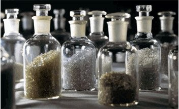
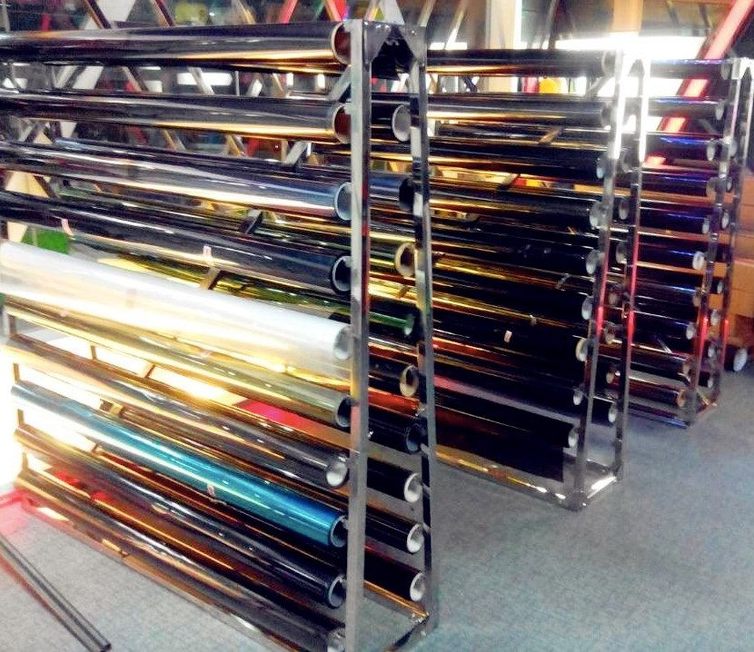
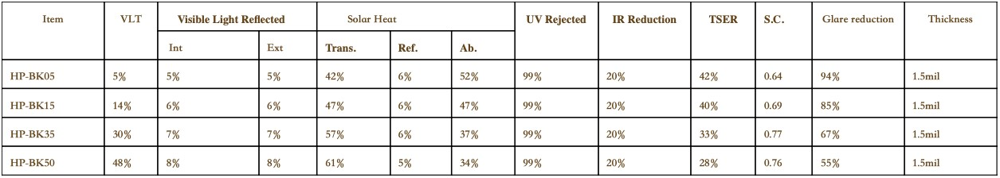

+7 (918) 450-38-11
Краснодар, 3-й Мартыновский пр-д, д. 3
Производство
Производство нашей пленки находится на заводе, основанном в 1997 году со штаб-квартирой в городе Гон-Конг, является одним из первых производителей: автомобильной пленки, пленки для защиты кузова, архитектурной пленки для охраны и безопасности. Есть 4 производственные линии с общими активами в 300 миллионов долларов США и площадью 200 000 м², которая имеет хорошие производственные и эксплуатационные условия. За последние 20 лет наши пленки завоевали высокую репутацию в 168 регионах и странах по всему миру, особенно: в Соединенных Штатах, Мексике, Бразилии, Колумбии, Дубае, Саудовской Аравии, Таиланде, Индонезии, Вьетнаме… Мы стремимся сделать мир более безопасным и комфортным с помощью нашей пленки. Мы стремимся быть лучшим поставщиком оконных пленок и искренне приветствуем людей, которые могут присоединиться к нам.
Как производится тонировочная плёнка
Тонировочная пленка начинается в виде полиэтилентерефталатных (ПЭТ) гранул, которые переплавляются. ПЭТ используется из-за его превосходной оптической прозрачности и прочности. Расплавленный материал затем двуосно растягивается в полиэфирный лист это означает, что он растягивается в направлении как его длины, так и ширины. Во время этого процесса обычно добавляются УФ-блокаторы. Все материалы произведены в США.
Следующим этапом изготовления является добавление красителей или металлов в полиэстер. Выбранный материал будет определяться желаемым исполнением пленки и его применением. Окрашенные пленки поглощают много тепла и поэтому обычно используются в автомобильной промышленности. Металлизированные пленки работают на оборот, отбрасывая большую часть тепла, а не поглощая его, и наиболее распространены для жилых / коммерческих пленок. Окрашивание: полиэфирная пленка покрывается и затем отверждается в печах с подогревом. Пигменты пропитываются в полиэстер под воздействием тепла. Цвет становится постоянной частью пленки и не смывается. Металлизирование может быть достигнуто с помощью трех процессов:
- Испарительное покрытие. Тигель, содержащий металл, нагревают до тех пор, пока металл не расплавится и не образует газовое облако. Этот металлический газ осаждается на пленке и связывается, как только он остывает. Алюминий является предпочтительным металлом из-за его низкой температуры плавления.
- Покрытие электронным пучком. Этот метод аналогичен испарительному, за исключением того, что пучок электронов высокой энергии направлен на источник газа, который осаждается на полиэфирном листе.
- Распыление: электрически заряженный газ, такой как аргон, бомбардирует металл и освобождает молекулы. Эти молекулы отлагаются на пленке и наслаиваются бок о бок. Обеспечение чрезвычайно тонких и точных покрытий.
Это покрытие настолько плотно, что вода, используемая во время установки, не может испаряться, что вызывает мутный вид. Этот туманный взгляд исчезнет после двух-трех недель керринга. Далее, устойчивое к царапинам покрытие наносится на сторону, которая будет обращена к внутренней части. Это покрытие действует как защитный барьер от пыли и мусора, а также от всего, что может соприкасаться с пленкой. Отличное стойкое к царапинам покрытие является ключевым элементом долговечности.
Основные характеристики
Тонировочная пленка серии HP (High Performance Film) - High Performance Film это модернизированная пленка, в которой используются прозрачные оптические и магнетронные технологии напыления металла, что влияет на снижение тепла и бликов, теплоизоляцию салона, УФ-фильтрацию. Прочная двухслойная конструкция, отсутствие помех от сигналов спутниковых радиосистем, GPS, сотовых систем и систем контроля давления в шинах. 99% защита от ультрафиолета, доступен в четырех оттенках, срок службы 3-5 лет. Двухслойная конструкция пленки сочетает в себе высокую теплоотдачу алюминия для оптимальной эффективности. Это помогает не только повысить теплоотдачу пленки, но и помогает продлить срок службы интерьера автомобиля, сводя к минимуму выцветание.
Уникальное преимущество
- Защита до 99% от вредных ультрафиолетовых лучей, изоляция до 90% источника тепла, ИК-лучи от солнца. Защита от выцветания отделки салона и автомобильных аксессуаров.
- Превосходный защитный слой от царапин в сочетании с металлизированной окраской позволил увеличить срок эксплуатации пленки до 5 лет, так же за счет потрясающе гладкого покрытия пленка легко раскатывается при установке, что облегчает установку пленки, удаление лишней влаги и разглаживание.
- Высокая прозрачность, дает комфорт при эксплуатации, делает пленку незаметной при вождении, нет искажений изображения и замутнений.
- Предотвращает блики от солнца, что даёт ощущение комфорта во время вождения.
- Пленки имеют толстый слой "густой" клеевой основы японского производства, что напрямую влияет на легкость, скорость и внешний вид при оклейке автомобиля. За счет такой структуры мелкие пылинки и соринки легко "проминаются" и позволяют откорректировать дефекты при оклейке без переклейки пленки.
- За счет использования новейших PET (полимерных) составов производства США наша пленка превосходно формуется при нагреве, облегчая работу установщика, ускоряя его работу и дает потрясающий результат для конечного потребителя (нашего клиента). Для мастерской это облегченная установка и быстрота оклейки (среднее время работы с задней полусферой 45 мин., независимо от конфигурации и сложности заднего стекла).
Часто задаваемые вопросы
- Защитит ли тонировочная пленка мой интерьер?
Защитит ли тонировочная пленка мой интерьер? Блокируя до 99% вредных ультрафиолетовых лучей, наша пленка может предотвратить большинство трещин и выцветание вашей приборной панели, сидений и отделки. - Почему я должен ждать, чтобы опустить мои окна после того, как они оклеены?
Почему я должен ждать, чтобы опустить мои окна после того, как они оклеены? Есть время отверждения, чтобы клей мог приклеиться к стеклу, обычно от 48 до 72 часов. Преждевременное опускание окон может вызвать сдвиг или деформацию пленки. - Будет ли тонировка отклеиваться?
Будет ли тонировка отклеиваться? Качественная пленка гарантированно не отслаивается, если она правильно сформована и установлена на стекла. - Защитит ли тонировочная плёнка мой интерьер?
Защитит ли тонировочная плёнка мой интерьер? Абсолютно! Повреждение приборной панели и салона автомобиля происходит под воздействием ультрафиолетовых лучей. Все пленки, отклоняют 99% ультрафиолетовых лучей, защищая вашу приборную панель. - Защитит ли меня тонировка от солнца?
Защитит ли меня тонировка от солнца? Все наши пленки блокируют 99% вредных солнечных лучей, которые могут вызвать рак кожи. - В чем разница между 5%, 20% и 35% пленки?
В чем разница между 5%, 20% и 35% пленки? Чем меньше число, тем темнее оттенок. Таким образом, 5% пленка позволяют проникать 5% видимого света, в то время как 35% позволяют проникать 35% света. - Почему мои окна выглядят туманными после оклейки?
Почему мои окна выглядят туманными после оклейки? Пленка наносится на стекло, которое было опрыскано специальной жидкостью, позволяющей пленке перемещаться и правильно позиционироваться. После нанесения тонировка интенсивно проглаживается, чтобы удалить как можно больше этой влаги, но часть всегда остается. В течение 5-7 дней лишняя влага испарится, тогда пленка застынет на стекле и станет абсолютно прозрачной. - Почему некоторые окна после оклейки покрываются пузырями?
Почему некоторые окна после оклейки покрываются пузырями? Пузыри обычно появляются на тонировке низкого качества, в котором отсутствует сильный клей. При правильной установке с нашей пленкой такого не происходит никогда!